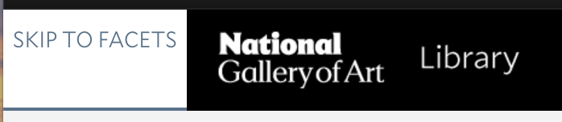

Group 2: Scott Broussard, Sean Greenberg, Sasha Jernakoff, Dylan Orshefsky, Amanda Trawick
LSC 555
April 30, 2025
The National Gallery of Art Library, founded in 1941, accompanied the public opening of the National Gallery of Art with the mission of supporting the institution’s staff members and visiting researchers in their curatorial and research needs. The NGA Library’s collection contains 500,000+ books and periodicals on art, history, theory, architecture, and art criticism, particularly (though not exclusively) focusing on Europe and the United States. The library is located within the East Building of the National Gallery and includes a study center, rare book room, and library and image collections. The NGA Library also hosts an online catalog which can be searched on site or remotely and allows users to search not only the library’s owned content but also its digital serial subscriptions, its extensive image collection, its auction catalogs, and more.
We reached out to the NGA Library staff via email and requested some technical information about their systems for this project. Head of Technical Services at the National Gallery Library, Sarah Osborne Bender, volunteered to help answer our questions and provide a behind-the-scenes look at their website.
The library’s main web pages, like the broader NGA.gov site, are managed at the institutional level. This includes the home landing page along with the links to make appointments, contact librarians, and view collection highlights. The library search website is managed by NGA Libraries specifically. Their search system is powered by Ex Libris Primo VE discovery layer, which has been in use since November 2018. This UI will be familiar to CUA students as it is the same system behind the CUA Libraries search site. Two additional services are used to help present locally digitized collection content: “an embedded IIIF viewer [International Image Interoperability Framework] delivers image content into the bib record view. And the image files and image metadata is pulled from the institution's digital asset management system, NetX.”
The public facing library and catalog search website does not interface with any collections or catalogs inside or outside of NGA as an institution; it is a self-contained search system. The majority of the NGA Library collection is at least partially described and fully discoverable in the library catalog, but NOT through the NGA.gov website search. It is important to note that within the Vertical File collection, however, records are described at the folder level rather than the item level. Some items, especially within the expansive Image Collection, are described only at the “‘summary’ level to at least indicate that image holdings exist for a particular artist or grouping.”
Osborne Bender added that “Though there is not linkage or other exchange…our permanent collection is managed using TMS collection management system and our institutional archives uses ArchiveSpace. Our conservation department uses Conservation Space for management of their data and images. None of these have public-facing search layers, though our archives is moving in that direction.” She also let us know that a new version of the main NGA website will be launched soon.
One challenge experienced by the NGA Library staff with the library website is that, as part of a large institution with very controlled branding, any edits made to the main library webpage are carried out by a separate technical department and cannot be controlled or carried out by library staff outside of simply submitting change requests. However, the library search website in particular is under much more direct control of the library staff: “We can change content and design on these pages, though we want seamless visual continuity with the rest of nga.gov. We can also make changes to the configuration that impacts searching (what and how MARC fields are indexed, for example), change the bib record display to include local fields or local field labels, add and remove functions (such as citation tools, etc).” Another challenge Osborne Bender described is the question of what search scope to use as a default, with possibilities including just the “library” (print collection, subscribed online serials, purchased/licensed ebooks); the auction catalog collection; the image collection; only items owned by the library (the current default); electronic and digital content only; and “everything.” Each scope has its benefits and drawbacks for both the user and the librarians who are trying to ensure that the fullest extent of their collections are discoverable and usable by their patrons.
Some strengths of the system, in Osborne Bender’s opinion, are the high quality of their cataloging, the embedded viewer for digitized content, and the power of their Primo VE search tool, all of which streamlines the process of connecting users to the content they are looking for. In the future, NGA Library is hoping to connect the NGA Library resources with the broader resources of the National Gallery in one search interface. This “would strengthen the meaning and relationships between original artworks, archival resources, scholarly publications, auction catalogs, conservation notes, and images,” in keeping with a current trend among other libraries, museums, and cultural heritage institutions.
The filtering section of a retrieval system is meant to refine the search that a user has requested. The NGA Library’s filtering system is specialized to meet the needs of art historians and that comes with advantages and disadvantages. A user can get very specific with their filtering tags and find the exact search result they are looking for with no other extraneous results if done correctly. A key component of the filtering system is how the filters update with each application. With each consecutive application, the filters become more and more specific and replace the old ones from previous applications.
However, this is only true once you learn the specific filtering system of NGA and know exactly what content you are looking for. The disadvantages are that the user must learn the filtering system to use it effectively. Because it actively changes and updates what filters are available with each progressive application of filters, meaning the user will have to remember filters or refresh their search if they forget to add one and cannot find it again.
Looking at Nielson’s Heuristics, it does well with #1, Visibility and System status, but needs improvement on #4, Consistency and Standards, and #6, Recognition and Recall.
Overall, the buttons meet expectations. The endnote button can be confusing if someone does not know what it is. I tried sending an email through the email button but didn’t receive anything, so it's inconclusive what it does. This could be something that requires the user to be signed in, however, that is not notated.
The metadata can be spotty at times. As expected, information such as title, publisher, the standard number, the location in the library, and how to access the item is consistently available for items. Metadata about what information the item provides is not always available or easy to find.
| Button | Function | Image |
|---|---|---|
| Title | Clicking on the title will pull up more information on the item - export information, details of the item, location, other titles to browse.This is the same page that the location, QR code, and permalink will direct you to. | |
| Location | Clicking on the location will direct you to the same information page as the title, the only difference is it takes you directly to the location section of the page. | |
| QR | This button generates a QR code that links to the item’s information. There is also a button that lets you copy the link. Both take you to the same page. | |
| Export to Excel | This button promts you to choose the file type (xslx or csv) and download an Excel file. The Excel file has information about the item - title, uniform title, creator, publisher, date, edition or state, format, access note, description, biographical/historical notes, source of acquisition, is part of, dissertation, subject, contents, other title, related titles, notes, series, frequency, bound with, standard number, permalink. | |
| Endnote | Opens a new tab to log into EndNote, which is a reference management software use to help manage references. | |
| This button prompts you to add an email address to send an email. It includes the subject line of the email. When an email address is not correctly inputted, a message appears stating the error. It instructs the user to log in if they want to send the email to multiple recipients and includes directions on how to send it to multiple recipients. Clicking on the envelope icon will pull up the same thing. | |
|
| Citation | This button generates a citation. You can choose one of five citation styles - Chicago manual of style 16th edition, APA (6th edition), MLA (8th edition), Harvard, and MLA (7th edition). There is a button to copy the citation. It also notes that the citation should be checked for accuracy before using it. |
|
| Opens a new tab with a prompt to print the document. It includes information about the item - added entry, publisher, date, format, subject, notes, series, standard number, availability, location. | |
|
| Permalink | This button presents the link to the item's information page. It has a button to copy the link. Clicking on the link icon will pull up the same thing. | |
| Pin icon | This button will mark the item as a favorite so you can quickly reference it later if you go to your favorites page. | |
| Favorites | This button will his will direct you to the favorites page. If you are signed in, it will keep pinned items and your search history for multiple search sessions. If you are not signed in, it will only keep this information until you end your search session. | |
| Chapters of this book | This button directs you to a page that lists chapters in the book. | |
| Chapter Title | Clicking on a chapter title will pull up more information on that chapter. It includes a description of what is in the chapter, which is the first time I have seen any sort of summary of what is in the book. | |
Accessibility in web design is an axis of technical and aesthetic design that cuts across specific feature-sets and gets at
the heart of "usability". Accessibility in a search page can take many forms, and the National Gallery Library employs several
key features in order to make their page more accesisbile to users with a variety of levels of ability, and to meet the standards set
by the Web Content Accessibility Guidelines.
The most critical accessibility features on this page have to do with input methods. In addition to the text based search bar,
there is the option to select an audio-based search term input. This increases the Operability of the page, and can enable users
who might struggle with a keyboard to enter their search terms via another method. The other key input feature is keyboard navigation.
All elements on the search page are navigable and selectable via the web-standard tab-and-arrow-keys method.
In addition to this base component, the site includes several "hidden" buttons
that only become visible when navigating the page in this way (see below). These buttons enable quick travel across the page to specific high
value locations within the search features and search results.

|

|
 |
Although the site includes these features, and receives
good marks
from accessibility standards checking programs, it is not without its faults in this area. The base text colors and fonts are well chosen
for readability, but there is no built in method for text-resizing, or any true dedicated accessibility options menu at all. In addition
to this, some features are not successful on all browsers; within our project group, we had multiple users experience the "microphone" icon
that enables the text-to-speech capability not appear at all.
Similarly, more advanced features such as search term suggestions and corrections (such as misspellings) are not well supported by these features.
The "virtual browse" menu is another element on the item result page which does not respond as expected to keyboard navigation.